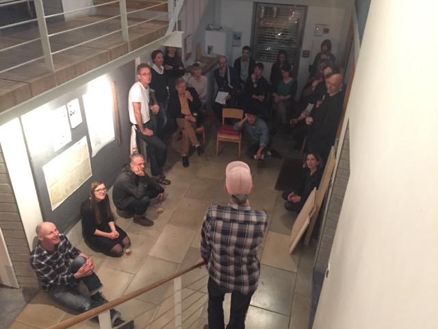

On Friday 30 September we held an evening of discussion on the theme of measurement. This was prompted by the campaign of our friend Michael Marriott to abolish the centimetre and to use only millimetres (and metres) for measurement. We gathered in the atrium at 115 to debate this and other issues in measurement.

Michael started the proceedings with powerful arguments for his case, saying that the centimetre was an unnecessary and unhelpful unit. He stressed that he was not against using feet and inches – despite the fact that the inch plays much the same role as the centimetre. When it came to a vote, his proposal to abolish centimetres was easily carried.
Robin Kinross looked at measurement in typography, focusing on how type could be measured in word-processing software. He outlined a system in which type sizes are related to linespaces (or ‘leading’) and which could avoid the whole bedevilled issue of how and in what units to measure type. Adobe, Apple, Microsoft – take notice!
Following up a manifesto statement of 20 years ago, Dan Monck talked about how the size of buildings can relate to the ways in which they are designed. Previously he had suggested that drawing constraints could provide a healthy limitation on the size of buildings, but now there are no obvious limits beyond those of manufacture and construction. He suggested a new ‘dogma’: that the size of a building should be related to the number of people who would inhabit it. He illustrated this by asking us to all join hands and extend our arms to form a maximum length …
Lucy Bristow then spoke about measurement in film making. From her experience as a camera operator she demonstrated how a focus puller would do the job, tape measure in hand.
On the walls and in the display cases we had assembled a fine collection of measures and rules, and other documents of measurement.
The talks and the disccussion were accompanied by pizzas made in a small oven in the front courtyard, and London-brewed beer.